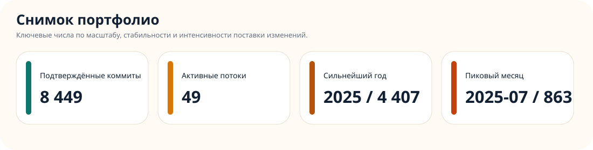
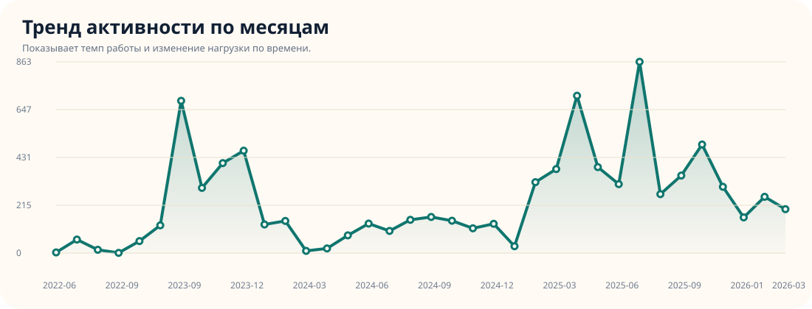
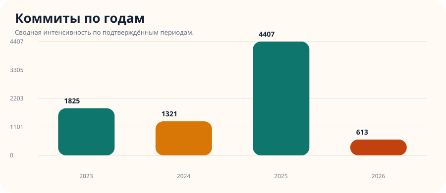
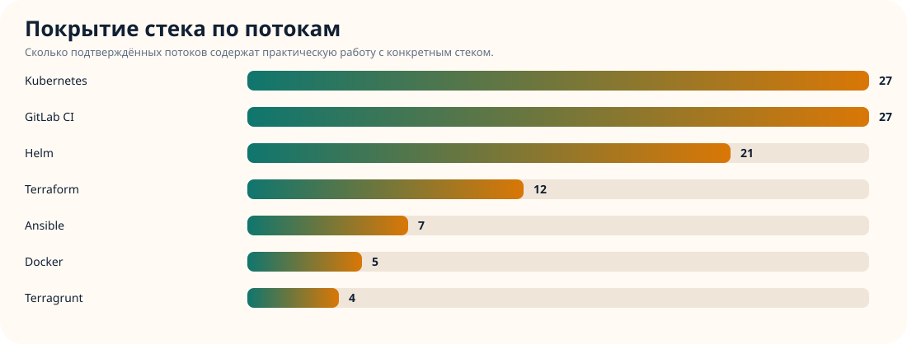
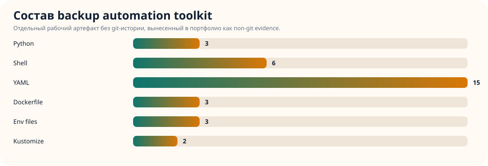
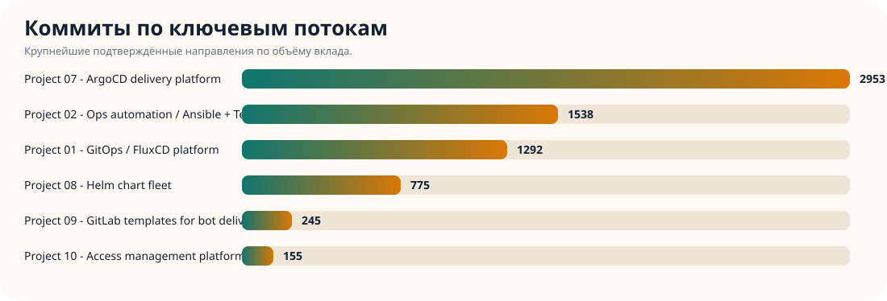
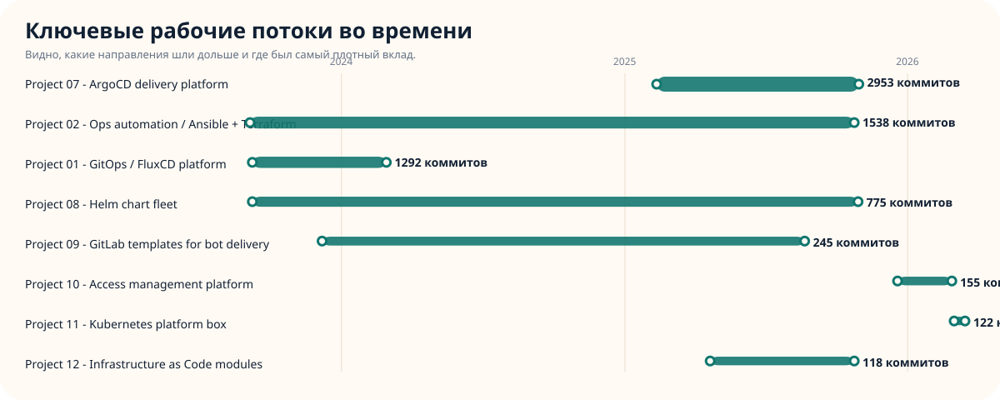

Для HR
Быстро видно, что опыт подтверждается не только резюме, но и цифровым следом: коммиты, инфраструктурные артефакты, кейсы и воспроизводимый демо-стенд.
DevOps / Platform Engineer
Собрано на основе локального архива рабочих каталогов и публичного демо-стенда. Показывает подтверждённую активность по Kubernetes, Terraform, GitOps, CI/CD и observability.
Обзор
Быстро видно, что опыт подтверждается не только резюме, но и цифровым следом: коммиты, инфраструктурные артефакты, кейсы и воспроизводимый демо-стенд.
Можно быстро пройти путь от верхнеуровневой сводки к конкретным направлениям: Kubernetes, Terraform, GitOps, CI/CD, observability и platform engineering.
Портфолио помогает обсуждать не абстрактные навыки, а конкретные потоки, периоды активности, стек и типы задач.
Графики







Техсрез
| Поток | Коммиты | Старт | Финиш | Стек |
|---|---|---|---|---|
| Project 07 - ArgoCD delivery platform | 2953 | 2025-02-11 | 2025-10-30 | Helm, Kubernetes |
| Project 02 - Ops automation / Ansible + Terraform | 1538 | 2023-09-05 | 2025-10-24 | Ansible, GitLab CI, Kubernetes, Terraform |
| Project 01 - GitOps / FluxCD platform | 1292 | 2023-09-08 | 2024-02-28 | Helm, Kubernetes |
| Project 08 - Helm chart fleet | 775 | 2023-09-08 | 2025-10-29 | Helm |
| Project 09 - GitLab templates for bot delivery | 245 | 2023-12-07 | 2025-08-21 | mixed |
| Project 10 - Access management platform | 155 | 2025-12-19 | 2026-02-27 | GitLab CI, Kubernetes, Terraform, Terragrunt |
| Project 11 - Kubernetes platform box | 122 | 2026-03-02 | 2026-03-16 | GitLab CI, Terraform, Terragrunt |
| Project 12 - Infrastructure as Code modules | 118 | 2025-04-21 | 2025-10-24 | GitLab CI, Terraform |
Кейсы
Контур с 100+ сервисами, GitOps-процессы, Helm, GitLab CI/CD, мониторинг и эксплуатационные изменения в production.
Terraform, Terragrunt, AKS, private ingress, Key Vault, сетевые политики и инфраструктурная подготовка к аудиту.
Kubernetes, Airflow, Trino, JupyterHub, Vault, External Secrets, registry и observability для data-направления.
Отдельный рабочий toolkit без git-истории: Python backup/restore скрипты, Kubernetes CronJob, Docker utility-образы, S3/AWS, Slack alerting, PostgreSQL, MariaDB и MongoDB.
Стенд
Отдельный демо-проект внутри портфолио: Terraform + Kubernetes + GitHub Actions + Prometheus/Grafana/Loki. Локально прогнан end-to-end через kind, deployment и smoke-test.
Материалы